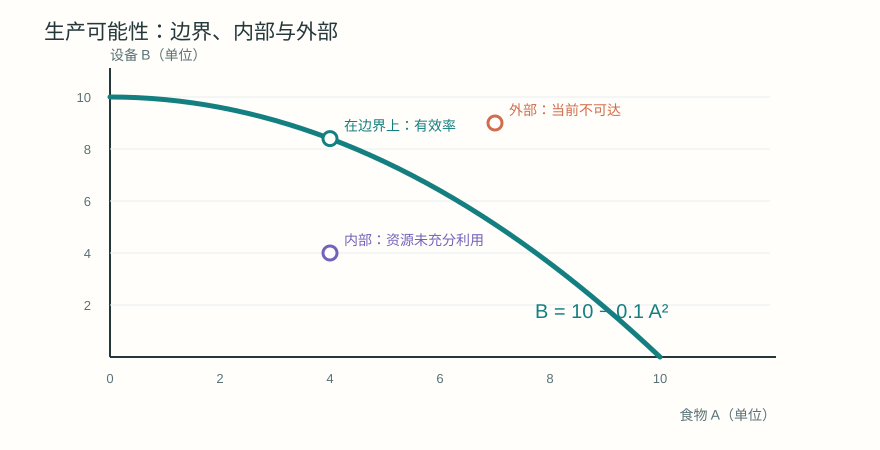

CHAPTER 02 · MICROECONOMICS
经济模型：PPF与比较优势
从资源边界到比较优势，解释为什么交换能够扩大机会。
先画约束，再谈最优
设想某地区只有固定数量的劳动、机器和土地，可以生产食物 A 与设备 B。若将更多资源投入食物，就可能不得不减少设备。这种权衡的最大可行组合构成生产可能性边界（PPF）。这是一个为了显示因果关系而简化的模型，而不是特定经济体的实测图。
模型把资源总量、技术水平和两种商品的定义固定下来。它回答“能生产什么”，不直接回答“社会应该选择什么”，后者还需要偏好和公平等信息。
生产可能性边界：内、上、外三类点
使用一个可复核的教学函数：A 介于 0 与 10 之间，设备前沿产量为 B=10−0.1A²。当 A=4 时，B=8.4；所以 (4,8.4) 位于边界上，(4,4) 在边界内。若 A=7，边界允许的设备至多为 5.1，因而 (7,9) 在外部，当前不可实现。

| 食物 A | 边界上设备 B | 解释 |
|---|---|---|
| 0 | 10 | 只生产设备 |
| 4 | 8.4 | 生产有效率 |
| 6 | 6.4 | 多食物、少设备 |
| 10 | 0 | 只生产食物 |
为什么机会成本可能递增
沿着这条前沿，从 A=4 移到 A=6，多生产 2 单位食物，设备从 8.4 减为 6.4，平均每单位食物放弃 1 单位设备。若 A=8 移到 A=10，设备从 3.6 变成 0，同样增加 2 单位食物，却要牺牲 3.6 单位设备，单位机会成本升到 1.8。
如果劳动和机器的用途各有专长，越往某一种商品集中，就可能需要把越来越不适合的资源转移过去，导致机会成本递增。但这不是所有技术条件下必然发生的事实：机会成本恒定时，前沿可以是直线。技术进步能推开边界，而让闲置设备开工则可能只是从内部走到边界。
比较优势：强者也有交换理由
假设甲一小时最多生产 4 个苹果或 2 米布，乙一小时最多生产 3 个苹果或 1 米布。甲的绝对生产效率在两项上都更高，但甲每多生产 1 米布，需要放弃 2 个苹果；乙每多生产 1 米布，放弃 3 个苹果。因此甲在布上有比较优势，乙在苹果上有比较优势。
| 生产者 | 每小时苹果 | 每小时布 | 一米布的机会成本 | 比较优势 |
|---|---|---|---|---|
| 甲 | 4 | 2 | 2 苹果 | 布 |
| 乙 | 3 | 1 | 3 苹果 | 苹果 |
以 1 米布换 2.5 个苹果：甲生产多一米布、少两苹果，交换回来 2.5 苹果，净多 0.5 苹果；乙生产多 3 苹果、少一米布，再用 2.5 苹果买回布，仍净多 0.5 苹果。计算只是在说明互利贸易的可能性，尚未涉及交易费用、谈判、转型或分配损益。
可进一步对照 OpenStax 的比较优势章节。
什么时候贸易并不能让双方都受益？
比较优势不保证所有人都从贸易中受益。现实里有运费、转换职业的成本、贸易限制和收入分配效应；特定生产者可能遭受损失。所以“总体存在贸易收益”和“人人立即获益”必须区分。
若 1 米布要换 3.5 个苹果，前述双方是否仍都能按比较优势分工获益？
展开解析
甲愿意接受，因为价格高于它的机会成本 2 苹果；乙不会接受，因为自己生产一米布只放弃 3 苹果。3.5 不在双方的互利价格区间内。
贸易需要买卖双方协调意愿。下章研究消费者在不同价格下愿意购买多少。
交互实验：沿边界移动的机会成本
拖动食物产量，读出设备的机会成本
教学函数 B=10−0.1A²，A 为食物产量（0–10 单位），B 为对应的最大设备产量。拖动滑块改变 A，观察边界上的设备产量与再多生产 1 单位食物需放弃的设备。
食物 A=4：设备最多 8.4；再增产 1 单位食物需放弃 0.9 单位设备。
默认参数可独立阅读；机会成本随 A 递增是本教学函数的性质，并非所有技术条件下都成立。
参考资料和数值说明
本章图形与所有数值均为独立构造的教学示例，不代表实测数据，也未复制教材插图。概念主要与以下开放教材交叉核对：